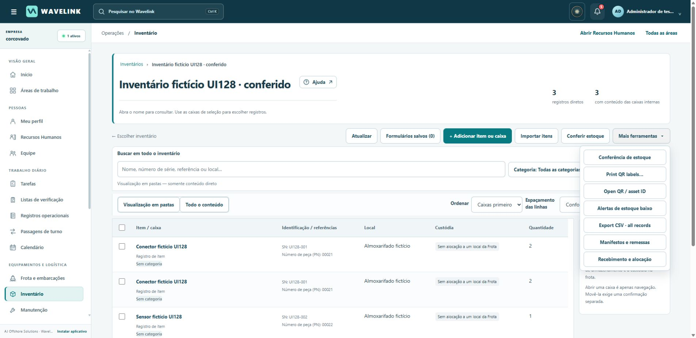
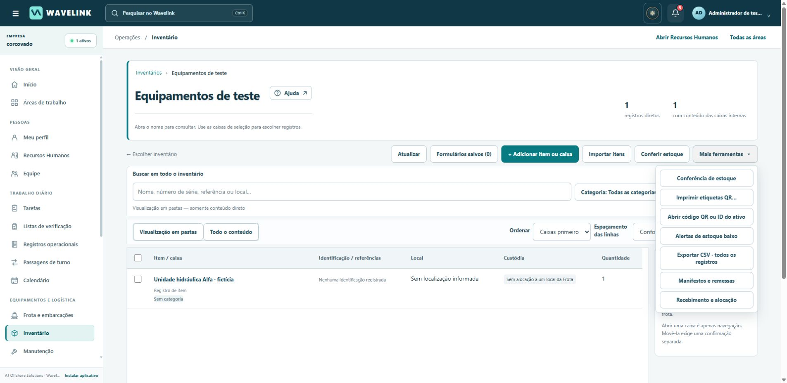
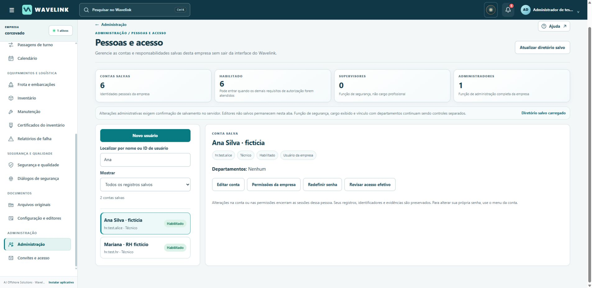
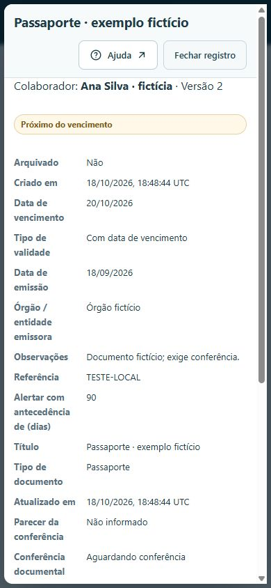
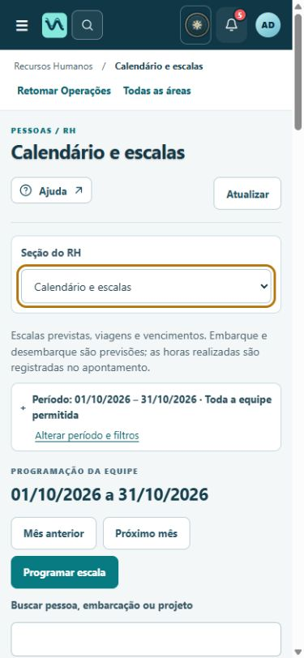
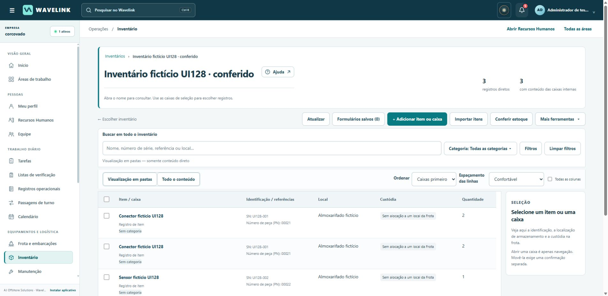

CORCOVADO · UI128 · VERSÃO 1.34.28
Navegar, conferir e voltar
com o contexto preservado
Entrega integrada de RH, Documentos e Operações, preparada sobre o commit ebd92c43ec7c92431a1def49137e3ff1fe36bf2d.
Concluído nesta preparação
RH, contas e ajuda
Cancelar edição compara os valores reais com o início do formulário. Busca, filtro e pessoa selecionada permanecem ao retornar. Avisos respeitam pedidos em andamento, resultado incerto e mudança de conta.
Recuperação, convites, ajuda e instalação receberam mensagens em português e correções de foco, pesquisa, títulos e links internos. Escalas planejadas continuam separadas de horas trabalhadas.
Documentos e inventário
Importação de pacotes corrigida no Windows, com arquivo temporário fechado antes de ser reaberto pelo leitor. O idioma inicial acompanha a empresa; mudar ou cancelar a seleção não descarta a proposta.
Comparação informa que agrupa identificadores entre abas diferentes. Etiquetas QR, estoque mínimo e estados internos de localização estão em português, preservando nomes, notas, números de série e códigos com zeros à esquerda.
Operações
Fotos de evidências de manutenção usam o controle comum de janelas: Voltar fecha a foto e preserva a tela anterior. Passagens de turno e evidências receberam mensagens mais claras.
Testes verificam revisões, anexos, permissões, atribuições, pendências e ciência pessoal. Abrir, ler ou exportar um registro não é aprovação nem assinatura.
Integração e preservação
As áreas foram reunidas em uma única versão. Não houve reinicialização da empresa, limpeza do banco ou criação de serviço.
O usuário temporário teste-rh-ui121-2 permanece. Nenhuma mensagem foi enviada a terceiros. A marca Wavelink/AJ Offshore Solutions e os idiomas das outras empresas foram preservados.
O que foi confirmado no Chrome local
Servidor isolado na porta 8781, com dados fictícios. Estes resultados não equivalem a 54 testes completos no navegador nem a validação autenticada em produção.
| Jornada | Resultado observado |
|---|---|
| Administração: cancelar edição | Sem alteração ou após restaurar os valores originais, cancelar preservou o filtro Ana, a pessoa selecionada e a sessão. |
| Administração: alteração não salva | O aviso apareceu; recusar o descarte manteve o texto alterado e a conta conectada. |
| RH: Ver registro | Fechar e Voltar do navegador preservaram a sessão no computador e com largura de 390 px. |
| Calendário e escalas | Calendário legível no celular, sem transbordamento horizontal no cenário verificado. |
| Importação de inventário | Planilha importada com 3 linhas após excluir Total; códigos PN com zeros à esquerda e números de série repetidos foram preservados. |
| Etiquetas QR | Mensagens em português e contagens de itens/páginas conferidas; geração não significa verificar ou movimentar estoque. |
A confirmação nativa de descartar alterações foi recusada no Chrome, preservando a edição. Aceitar o descarte foi testado em componente, mas não certificado visualmente naquele diálogo. Impressão física e leitura do QR por câmera também não foram realizadas.
Antes e depois: ferramentas do inventário


Outras verificações visuais




Cobertura por função
Matriz integrada de cobertura das 54 funções
A evidência combina testes de API/serviço e execução das funções reais da interface com componentes simulados. A tabela descreve o que foi exercitado; não afirma que todos os recursos foram criados nesta versão ou percorridos de ponta a ponta no Chrome.
RH, acessos e ajuda · 16 funções revisadas
| Função | O que a evidência comprova |
|---|---|
| Início: troca de empresa | Troca explícita de empresa preserva filas e rascunhos de cada contexto; referência antiga ou empresa incorreta é recusada. Não houve troca de empresa em produção. |
| Perfil: conta e acesso | Diálogos de segurança permitem cancelar sem validar campos obrigatórios, bloqueiam fechamento durante envio e devolvem o foco. Testes locais cobrem MFA, expiração e revogação; não houve alteração real de credenciais. |
| RH: necessidades e cobertura | Cobertura exige necessidade cadastrada e colaboradores vinculados confirmados, sem contagem duplicada. Escala planejada não cria apontamento de horas nem comprova disponibilidade. |
| Acessos: pendentes | Conta pendente permanece desabilitada e só consulta seu estado; permissões e fila de análise respeitam o escopo. Nenhum convite real foi enviado. |
| Acessos: revisão de solicitação | Cancelar compara valores atuais com o início da edição, inclusive caixas de seleção. Alterações de conta, permissão ou versão impedem envio antigo. |
| Acessos: entrada por convite | Títulos, verificação e estados de repetição estão em português; nomes e e-mails são preservados. Prova temporária é removida do endereço e não ativa acesso automaticamente. |
| Acessos: recuperação de senha | Mensagens de erro e sucesso em português; mínimo de 8 caracteres, confirmação da senha, expiração e tentativas testados com transporte de e-mail fictício. Sessões são revogadas sem perder identidade, permissões ou MFA. |
| Administração: usuários | Busca e filtros permanecem ao cancelar ou atualizar. Alterar ou restaurar valores produz o aviso correspondente; testes de API cobrem validações e desfazimento integral em erro. |
| Administração: detalhe da conta | Cancelar retorna à conta selecionada e mantém a sessão. Resultado incerto preserva a mesma tentativa; outra conta não assume a edição. |
| Administração: departamentos | Renomear departamento preserva referências e histórico; regras de situação ativa continuam aplicadas. |
| Administração: membros e responsáveis | Responsável deve ser membro ativo; alterações antigas são rejeitadas. Remover e readmitir membro não reativa permissões revogadas. |
| Ajuda contextual | Ajuda aceita somente destinos internos permitidos; abre em outra aba sem acesso à janela de origem e preserva rascunho e sessão. |
| Ajuda: tópicos | Busca por acentos, filtros, falha e repetição testados. 77tópicos por idioma e 154sumários conferidos; títulos e âncoras corrigidos. |
| Ajuda: instalação | Orientações deixam de fixar versão antiga; pedido de instalação e alternativa manual preservados. Fechar devolve foco. Nenhum dispositivo foi instalado. |
| Ajuda: falhas de acesso | Conta pendente, empresa incorreta, convite inválido e sessão revogada são recusados. Não houve bloqueio proposital de conta real. |
| Ajuda: estados de conexão | Busca informa modo limitado e permite nova tentativa após restauração da página. Estados de conexão preservam identidade da operação; condição real de PWA móvel sem rede continua limitada. |
Documentos, inventário e importações · 18 funções revisadas
| Função | O que a evidência comprova |
|---|---|
| Inventário — Etiquetas QR | Localizadores não contêm credenciais; leitura de item continua autenticada e dependente das permissões. |
| Inventário — Importar planilha | Importação aditiva preserva itens existentes, escopo de tarefas e contagens; erro tardio desfaz todo o lote; repetição exata não duplica. |
| Inventário — Conferir fontes | Fonte/linhas originais mantidas; excluir linhas informativas salva somente itens selecionados; mudança exige nova conferência. |
| Inventário — Mapeamento e seleção de linhas | Mantém índices originais, zeros à esquerda, quantidade desconhecida distinta de zero e rascunho conferido. |
| Inventário — Comparação de duplicados | Duplicata por linha de origem já importada bloqueia gravação. Comparador visual consultivo agrupa SN/ativo somente entre abas distintas; título e ajuda deixam explícito que zero grupos não descarta repetições na mesma aba. |
| Inventário — Estoque mínimo | Limite 2: desconhecido permanece desconhecido; 0/1 alertam; 2/3 não. Configurar/desativar alerta não muda quantidade. Prefixos traduzidos preservam notas/nomes. |
| Editores — Rotinas de manutenção | Importar cria rascunho; publicar/reordenar/revisar mantém registros concluídos e ordens existentes ligados à revisão gravada. |
| Editores — Estruturas de inventário | Cria estrutura vazia por usuário autorizado, importa estrutura separada, nega autorização/hub incorretos e mantém relações válidas; fluxos visuais não declarados concluídos. |
| Editores — Importação avançada | Corrigido arquivo temporário reaberto no Windows; arquivos são removidos em sucesso/erro. Português inicial em pt-BR; idioma explícito preservado e cancelar troca mantém proposta. Ajuda .ajlogs contextual. |
| Editores — Interpretação e mapeamento | Rótulos portugueses e acentos preservados; coordenadas esparsas permanecem originais; evidência passiva não altera conteúdo conferido. |
| Editores — Conferência de fontes | Navegar/inspecionar é somente leitura; assinatura da proposta inclui seleção original completa; alteração material exige conferência nova. |
| Originais — Baixar original | Download/revisão preserva bytes exatos; acesso exige projeto e sessão corretos; voltar da visualização mantém contexto/conta. |
| Registros — Pendências e acompanhamento | Responsável limitado ao acompanhamento; motivo/histórico mantidos; permissão revogada bloqueia tentativa antiga; erro de auditoria desfaz estado/notificação/recibo. |
| Registros — Referência original | Liberação explícita e revogação respeitadas; links históricos conservam revisão; referência arquivada/adulterada não vira origem nova. |
| Admin — Editor de livros | Cria somente estrutura vazia; IDs, unidades e ordem preservados; consulta não revela histórico; pacote exportado pode ser reimportado. |
| Admin — Gestão de registros | Arquivo/restauração preserva respostas/bytes; encerrado não é desbloqueado; filtro/busca não escreve; relatório privado permanece restrito ao autor mesmo para admin. |
| Admin — Importações e exemplos | Página orientativa de oito caminhos e limites de importação; acesso administrativo e links corretos testados. Não é um importador de projetos completos nem gerador de exemplos. |
| Admin — Identidade de relatórios | Somente admin altera identidade; prévia/importação são somente leitura; PDF mantém snapshot e empresa gravada; fluxo da tarefa inalterado. |
Operações · 20 funções revisadas
| Função | O que a evidência comprova |
|---|---|
| Assumir / confirmar atribuição | Não há ação distinta de aceite. A gestão atribui responsáveis; abrir a tarefa pode marcar o alerta como lido sem assumir, iniciar ou concluir o trabalho. |
| Adiar / reatribuir | Pausa e reatribuição exigem autoridade atual, motivo quando aplicável e versão exata; trabalho salvo e auditoria são mantidos. |
| Meu turno | Rascunho privado é do autor; reabrir mantém conteúdo e período, sem publicação automática ou acesso por outro administrador. |
| Escala de turnos | Ciclos, data operacional e turnos atravessando meia-noite preservam a data e exigem escolha explícita do próximo dia. |
| Preparação de fontes | Copiar apenas seções selecionadas de publicações acessíveis cria novo rascunho privado; não copia assinaturas, anexos ou ciência. |
| Histórico | Histórico e comparação consultam revisões exatas e nunca registram ciência; permissões atual e histórica são verificadas. |
| Anexos | Arquivo fica ligado à publicação/revisão exata; correção e cliente antigo preservam referências salvas; acesso é revalidado. |
| Relatórios | PDF contém publicação salva; rascunho privado não é exposto; leitura/exportação não registra ciência. |
| Leituras e anexos | Resultado e foto persistem na revisão; corrigir resultado aprovado requer justificativa e reinicia aprovação. Visualização não aprova nada. |
| Pendências | Ciclo bloqueado aparece como pendência, sem gerar conclusão ou sucessor automaticamente; usuário sem leitura não vê título. |
| Livros da embarcação | Livro vinculado mantém sua embarcação e registros; outra embarcação é inacessível; retirar vínculo retira acesso, não exclui dados. |
| Registros e pendências | Criar registro, ler aviso, corrigir e resolver são ações distintas. A correção conserva histórico e exige versão atual. |
| Permissões por local | Permissão logística não concede leitura dos livros. Direitos dos livros são explícitos, por local, e alterações revogam sessões antigas. |
| Divergências | Recebimento parcial e item faltante continuam pendentes; avaria não libera quarentena; anexos não atravessam remessas. |
| Revisar e encerrar | Revisão é explícita; devolução exige nova resolução; encerrar não resolve automaticamente tarefas privadas vinculadas. |
| Vincular tarefa / registro | Vínculo não concede acesso ao objeto privado nem encerra a ocorrência; revogar acesso oculta os dados do objeto vinculado. |
| Participantes | Mudar lista de participantes não assina por ninguém; ciência depende da identidade e ação pessoal. |
| Ciência e assinaturas | Ciência identifica pessoa e texto exato; corrigir documento já assinado exige motivo, conserva evidência anterior e invalida ciência da nova revisão. |
| Relatório | PDF usa evidência salva e identifica corretamente visitante autodeclarado, sem afirmar verificação de identidade inexistente. |
| Configuração da frota | Criação/alteração de local e concessão de escopo pertencem ao administrador; atribuir papel logístico não cria acesso administrativo. |
Relatório RH · Relatório Documentos · Relatório Operações · Diagnóstico da bateria histórica
Backup, reconstrução e reversão
Backup verificado em /var/data/wavelink-release-backups/20261018T185445Z-before-ui128, com integridade SQLite ok, nenhuma violação de chave estrangeira e arquivo compactado conferido. Foi usado o mecanismo de backup on-line do SQLite e cópia estável de configuração; os processos escritores não foram parados porque não houve migração ou restauração de dados.
Comprovante do backup e hashes. Para um problema apenas no código, a reversão usa o deployment anterior no mesmo serviço do Render. Não se deve restaurar dados automaticamente por causa de uma falha de interface.
A cadeia completa foi reconstruída em pasta nova: 2.307 recursos, com 235 arquivos no conjunto de alterações. SHA-256 do manifesto reconstruído: 760e140a1fc88da138b1295b14fcfddc1445b20642ebf43c26b0fc16ef494da8.
Comando de reconstrução em um diretório novo: python deploy/materialize_runtime.py ./runtime-ui128. Nunca importar os cenários fictícios dos testes no banco da Corcovado. O pacote de fontes não é um instalador Windows compilado.
Em andamento
- Branch de preparação
ui128-revisao-finalcriada no GitHub. Publicação única pelo coordenador, com registro do commit final e deployment no serviço existente da Corcovado. - Verificação de integridade da versão servida após o deployment. Código publicado, deployment ativo e comportamento testado serão registrados separadamente.
Ainda precisa de verificação
- A bateria histórica permanece com 381 falhas em 625 casos; todas têm diagnóstico, mas diagnóstico não transforma falha em aprovação.
- O acesso automatizado autenticado à Corcovado continua bloqueado pelo navegador. Testes locais não comprovam comportamento em produção.
- OCR de imagens/PDFs não foi aprovado no ambiente local, que não tem Tesseract disponível.
- O instalador nativo Windows não foi construído nem executado. Seus arquivos de versão foram alinhados a 1.34.28 e as validações de entrada foram verificadas.
- A migração específica a partir da UI96 não foi exercitada: falta a cópia histórica exigida pelo teste.
- Casos de links simbólicos no Windows exigem privilégios que o ambiente local não tinha.
- Não existe módulo de chamados de TI com fila/histórico; ele não foi criado nesta entrega.
- Não existe aceite formal de atribuição de tarefa. Ler um alerta não significa assumir ou concluir a tarefa.
- A limpeza de antigos registros de teste UI121 em produção permanece pendente. O usuário temporário teste-rh-ui121-2 foi preservado.
- No Chrome foi confirmado recusar o descarte e manter a edição. Aceitar o descarte foi coberto pelos testes de componente, sem comprovação visual naquele diálogo nativo.
Termos adotados
| Termo | Significado nesta interface |
|---|---|
| Fechar registro / Fechar janela | Encerra somente a visualização; mantém a sessão. |
| Voltar para a lista | Retorna ao contexto de origem com filtros e seleção. |
| Cancelar edição | Abandona a edição mediante aviso quando houver diferenças não salvas. |
| Sair da conta | Ação própria de autenticação, separada das ações do registro. |
| Escala de trabalho | Planejamento de período e alocação. Não comprova horas efetivamente trabalhadas. |
| Apontamento de horas | Registro de horas realizadas para análise. Não é folha de pagamento. |
| Conferência documental | Análise explícita do documento enviado. Envio não significa conferência. |
| Prestação de contas / reembolso | Despesa apresentada e decisão de reembolso são etapas distintas. |
| Sem localização informada | Apresentação do estado interno de inventário Unassigned. Não altera o valor gravado ou nomes personalizados. |